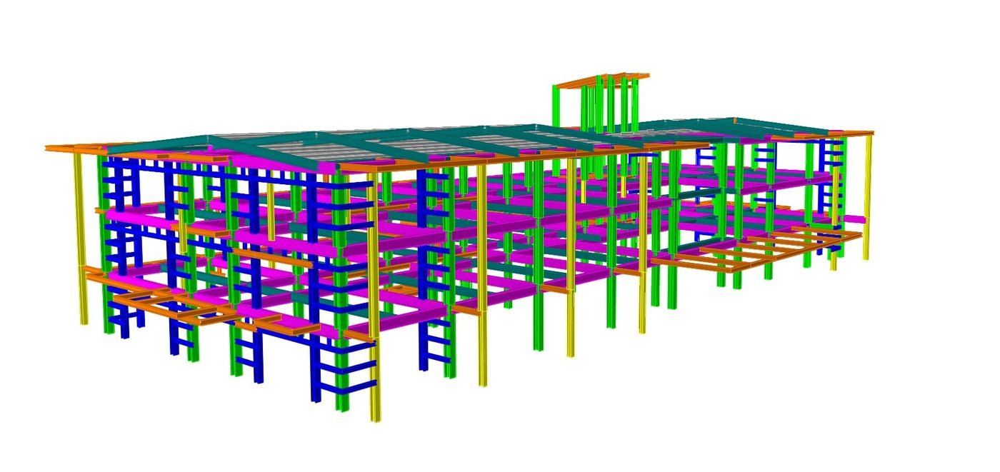

Center for Law and Graduate Studies, Cor Jesu College
- Problem
- A 4,970 m² school building just 182 m from the Digos Fault Line, with no room for an inflated budget.
- Approach
- Modelled in ETABS at 0.40–0.50g, using Vierendeel trusses instead of costly composite sections.
- Result
- NSCP- and NBCP-compliant, delivered with full cost estimates, BOQ and BOM.
- 4,970 m²built-up floor area
- 182 mfrom an active fault
- 0.40–0.50gdesign ground acceleration